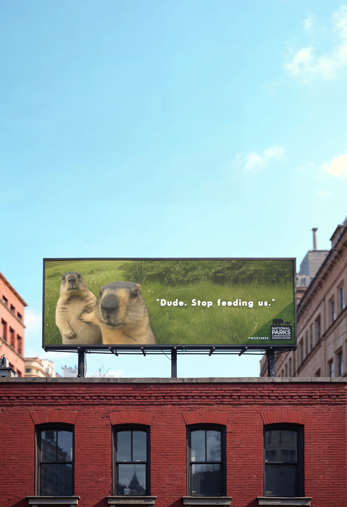
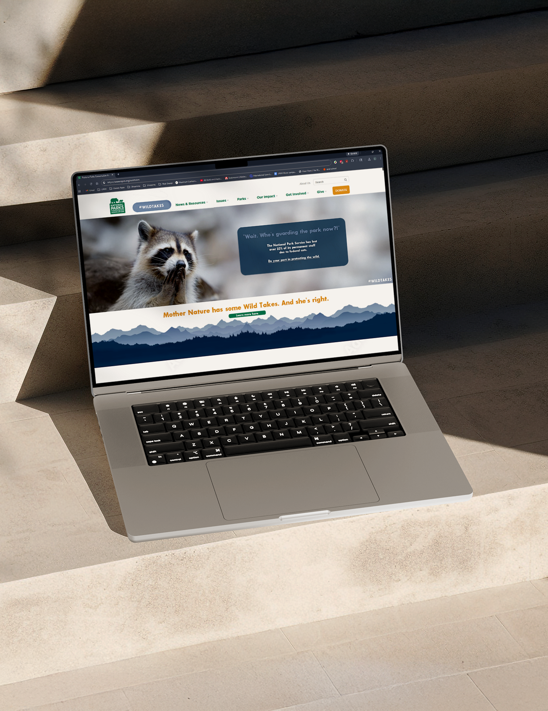
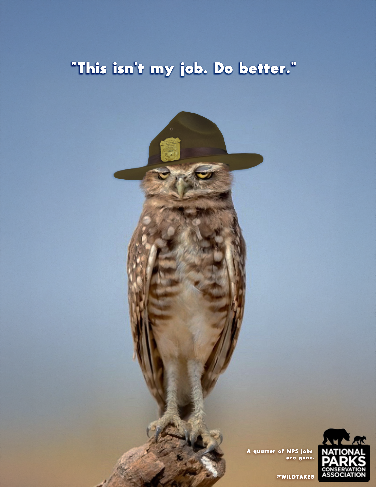

“Wild Takes” A National Parks Conservation Association Mockup Campaign
Wild Takes is a speculative advertising campaign for the National Parks Conservation Association (NPCA). It focuses on how federal funding cuts and policy decisions can impact U.S. national parks. I built this for Gen Z and Millennials because I wanted the message to feel like a real conversation, not a lecture. The voice is bold, funny, and a little sarcastic, but the point is serious. Parks need protection and people need a reason to care again.

Design Deliverables



Problem
National parks are getting hit by funding cuts and policy changes that reduce staffing, slow down maintenance, and weaken protection. When there are fewer rangers and fewer resources, visitors are less safe, wildlife is more at risk, and the parks slowly lose what makes them special. A lot of the damage is quiet at first, but it adds up fast and it can last for decades.
Audience
Gen Z and Millennials care about climate and they care about culture, but a lot of traditional nonprofit messaging feels heavy, repetitive, or easy to tune out. This audience connects more with honesty, humor, and content that feels real and shareable. They want to feel like they are part of something, not being guilt tripped into it.
Insight
People are burned out by the usual “save the planet” lines. If activism wants attention right now, it has to speak in a way that actually fits the internet and real life. That means being blunt, being a little funny, and still making the stakes clear.
Solution
Wild Takes flips conservation messaging into something people actually stop for. I used humor, irony, and wildlife as the “speakers” so the message feels current and scroll stopping, while still calling out real problems like lost rangers, unsafe parks, and weakened protections.
The goal is to make NPCA feel bold and culturally fluent, then turn that attention into action and long term support.
Process
I started by researching what federal cuts can actually mean for parks, like staffing, visitor safety, and protection. Then I looked at why younger audiences tune out nonprofit content. The biggest pattern was that people do care, but the messaging can feel overwhelming or too serious to engage with.
From there, I built a simple system that could carry the whole campaign. Wild Takes uses sarcastic, meme style commentary from animals, but every headline points back to a real consequence. I created the deliverables like a real rollout with print ads, web placements, and social concepts, all using consistent tone and visual language.
Strategic Takeaway
This project is my proof that I can take research, turn it into an audience insight, and then design a campaign that actually speaks to people. I wanted NPCA to feel less distant and more like a brand that gets it. The humor is the hook, but the impact is the message and the reason to act.